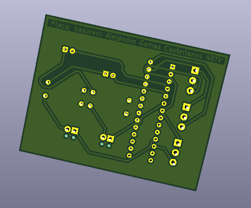

PLAN DE INVESTIGACIÓN ALIDET 2021
Contenedor de basura automático
“CENTRO DE BACHILLERATO TECNOLOGICO INDUSTRIAL Y DE SERVICIOS
No 85 JOSÉ MARÍA LICEAGA”
Coatzacoalcos Ver. México
5BTV MECATRONICA
Docente: ING. JOSE ALEJANDRO LEYVA MEDINA
Alumno: Alejandro Gamas Castellanos
05/11/2021
Introducción
Este es un reporte de investigación de un proyecto que está enfocado principalmente en la limpieza y la estética de diferentes lugares en que pueden o no ser concurridos, pero todo esto lo veremos más adelante. En el planteamiento del problema podremos exponer de qué manera la acumulación de basura en lugares concurridos es una situación desfavorable para todos los involucrados, por otro lado, en la justificación de la investigación podremos encontrar algo similar a lo que encontramos en el planteamiento, pero en este caso veremos alguna propuesta para solucionar la situación de la limpieza e higiene que se puede encontrar en el caso anterior. En la hipótesis veremos qué es lo que en primera estancia queremos lograr con este proyecto, ventajas y desventajas de la propuesta que se encuentra en este proyecto. A partir de esto, en los objetivos de la investigación nos encontramos con dos secciones, por un lado, tenemos el objetivo general, en donde se encuentra la utilidad que queremos conseguir para nuestro basurero, por otro lado, tenemos los objetivos específicos nos encontramos con utilidades secundarias que encontramos en este proyecto, detalles como la higiene de estos lugares y demás cosas favorables para la elaboración de este mismo. En el marco teórico nos encontramos con los antecedentes que tenemos en cuenta a la hora de elegir y solucionar la problemática de la basura en lugares en los que nos encontramos día con día. En la sección de descripción de planeación del desarrollo del proyecto, como su nombre lo indica, veremos los procesos que tomamos en cuenta para hacer nuestro proyecto, de principio a fin. En la descripción del grado de innovación nos daremos cuenta de la importancia en la mejora de este tipo de servicios básicos a día de hoy, en los tiempos en los que nos encontramos. También tendremos en la descripción de impacto social y tecnológico veremos cómo afectará de manera positiva o negativa este tipo de servicios a la sociedad, dependiendo de donde se implementen además de nuestra contribución a la tecnología y otro tipo de procesos. En la sección de factibilidad técnica y financiera veremos que tan rentable es implementar este prototipo en los lugares a los que va dirigido este basurero automático. También tendremos la sección de resultados, en donde veremos lo que hemos conseguido de acuerdo a los objetivos generales y especifico y lo que hemos conseguido con estos. Por último, encontraremos las conclusiones a las que llegamos al momento de realizar nuestro basurero automático.
Planteamiento del problema
En distintos ambientes sociales, hay una gran concentración de personas en un solo lugar, cuando hay cierta cantidad de individuos en un lugar bastante transitado, es vital tener una buena limpieza y mantenimiento de esa zona. El simple hecho de ver una basura en el suelo, para la percepción de una persona común y corriente, puede hacer que esta llegue a la conclusión de que no le prestan la suficiente atención a un lugar, y si es un sitio comercial donde gente nueva esté entrando y saliendo de un establecimiento, esto perjudica directamente tanto al consumidor como a emprendedor que tiene su negocio cerca de estos lugares En lugares como hospitales, el simple hecho de tener el menor contacto con residuos de cualquier tipo es a veces lo más importante, ya que los médicos, doctores y pacientes están en contacto con una gran variedad de materiales y/o herramientas en estas mismas áreas que, además, emanan todo tipo de olores que no son del todo agradables o en el peor de los casos, hasta nocivos para la salud. Tener contacto con cualquier residuo puede provocar algún problema mayor, un ejemplo muy reciente de esto sería la situación actual del mundo. Enfermedades tan fáciles de transmitir como el covid-19 son prueba de que la higiene y el cuidado en todo lugar al que asistamos es una necesidad, ya que diariamente con el simple uso diario de cubrebocas por persona contamos con una gran cantidad de deshechos diariamente.
Justificación de la investigación
Un ambiente limpio es un ambiente más cómodo para todos los individuos al momento de llegar a un lugar, el concepto de este prototipo es preservar la limpieza en todo momento y permitiéndole a los usuarios que contribuyan de una manera muy fácil el cuidado de estas áreas. Un lugar limpio también hace ver a un lugar muy bien, puedas llegar a regresar a ese lugar seguro de que hacen un buen trabajo en cuanto a la limpieza, todo esto implementando un simple contenedor de basura que hará que el lugar en el que esté dé una buena imagen y que también los usuarios contribuyan a mantener todo lugar muy limpio. Tomando en cuenta la reflexión anterior acerca de los hospitales, al tener el menor contacto con los residuos, será algo muy beneficioso no tener la necesidad de levantar una tapa de un contenedor de basura, tanto para los integrantes del hospital como para los pacientes que lleguen, podrán tener la seguridad de deshacerse de sus residuos de manera segura, ya que no tendrán contacto con absolutamente nada en el momento de depositar algún residuo al igual que las demás personas. Es por esto que ayudar a automatizar la limpieza de un lugar y efectuándolo de una forma más cómoda será algo más beneficioso dependiendo del lugar donde se encuentre este sistema tanto para las medidas de sanidad, además de ser un método estético, compacto versátil y hasta barato, al momento de que la gente se dé cuenta de este tipo de detalles, el dejar atrás un residuo general de un producto nuca habrá sido tan sencillo, estético y hasta saludable para la gente que lo use.
Hipótesis
Hay que pensar que hay personas que ensucian un lugar cuando no hay donde tirar basura, y cuando lo hay, no están cuidados correctamente o aun así el lugar sigue dando un aspecto desagradable y desprenden olores cuando este no se cierra correctamente, ya que por lo general o están al descubierto o tienen una tapa que debe levantarse con la mano, y eso al ser un usuario, consumidor de un establecimiento no es lo más agradable del mundo, la cuestión será es tener algo para tener el menos contacto posible a la hora de tirar residuos de cualquier tipo, pero que aun así tengamos la opción de dejarlo abierto o bien, dejarlo cerrado en su totalidad, ¿Cómo hacemos esto?
Objetivos de la investigación
Objetivo general
Crear un basurero versátil y configurable para el usuario dependiendo lo que necesite
Objetivos específicos
- Integrar un sensor para abrir la tapa del basurero sin necesidad de tocarlo.
- Integrar un sensor para detectar la capacidad máxima del basurero.
- Integrar una botonera trasera para configurar el basurero según lo que se necesite.
Marco teórico
La basura está presente en todas partes de una forma u otra, ya sea que haya un pueblo o una ciudad, un templo o una mezquita. Este problema ha ido en aumento desde las últimas tres décadas, lo que ha provocado problemas de salud y degradación del medio ambiente. Hoy somos víctimas de muchos tipos de desechos, incluidos los domésticos, agrícolas e industriales y es así que el problema de la limpieza y la higiene junto con otros aspectos es prueba de que debido a la cantidad de personas que transitan un lugar, si no se lleva a cabo una buena limpieza y dando por sentado que las personas necesitan un lugar donde depositar sus restos de basura en todo momento, para prevenir malos olores, infecciones o hasta plagas en diferentes sitios de donde se coloque la basura. Este tipo de problemas pueden desencadenar ciertos inconvenientes que son graves para la salud, y como un lugar concurrido esto muchas veces puede llegar a ser inaceptable, lugares como un hospital en donde la limpieza es vital, y el mal cuidado de este aspecto es totalmente inaceptable, factores como estos son los que pueden llegar a perjudicar muchos otros aspectos:
- Mal aspecto
- Criadero de bacterias, insectos y alimañas
- Contaminación del aire y propagación de enfermedades respiratorias
- Contaminación de las aguas superficiales y daño al ecosistema
- Manejo directo de los desbordamientos de desechos expuestos a riesgos para la salud
Descripción de planeación y desarrollo del proyecto
Cronograma de actividades
Primero necesitamos analizar un problema del cuál se necesite una solución y se pueda resolver por medio de sistemas mecatrónicos, después necesitamos seleccionar los dispositivos y aplicaciones que necesitamos para la creación de este proyecto. Las aplicaciones que se aplicaran para este proyecto son Simulide, SolidWorks, Tinkercad y por último, Visual Studio Code mediante el lenguaje de Python, después creamos el circuito en Tinkercad y próximamente en Simulide para pasarle la programación a la tarjeta Arduino por medio del lenguaje de Python con el editor de código “visual estudio code”. Después, comenzamos a diseñar la placa PCB haciendo una Investigación sobre un software de diseño para placas PCB y un curso sobre cómo realizarlo y próximamente diseño 3D de la misma placa, por consiguiente, procedemos a el modelado 3D del basurero y por último programamos la placa para mover al servo con un sensor y dos botones además de otro sensor para marcar la capacidad del contenedor.

La innovación en este proyecto llega en el momento en el que entra la opción de hacer que ya no se tenga la necesidad de entrar en contacto con el basurero al momento de tirar basura, esto haciendo que sea más fácil el hecho de tomar la iniciativa de tirar la basura en su lugar, esto también sirve para que en todo ámbito se genere un espacio limpio y libre de basura en todo momento además de que en los tiempos en los que estamos, no tocar las cosas a nuestro alrededor puede tener ciertos beneficios en cuanto a nuestra propia salud se trata, ya que últimamente el uso de medicinas, gel y cubrebocas es muchísimo mayor en los últimos años y, siendo este último ejemplo de algo que usamos mucho, los cubrebocas son portadores de virus de los cuales nos estamos protegiendo, y claro, si nosotros levantamos la tapa de un basurero con la mano y tal vez no sepamos que somos portadores de cualquier virus, esto provocará que pongamos en riesgo la integridad de las demás personas que también se encuentren cerca, es así como teniendo un basurero que no tenga la necesidad de tocarse, es beneficioso y práctico.
Descripción de impacto social y tecnológico
El impacto social de este proyecto hará que más personas se aseguren de no contaminar el ambiente en el que estén, ya sea un ambiente cerrado o al aire libre, al hacer este proceso aún más fácil de lo que alguna vez fue, termina por eso una buena opción siempre que sea posible para mantener un espacio limpio, así como prevenir plagas y derivados de la contaminación de un área. En cuanto a lo tecnológico, este proyecto no pasa desapercibido, ya que tiene a favor ser muy sencillo de realizar, y siendo así que esto es más que aplicable en gran cantidad de lugares y también siendo este muy versátil, ya que este mismo prototipo se puede adaptar al lugar en el que esté, ya que su mecanismo suele ser muy pequeño y solo le hace falta un suministro de energía, al que también se le podría agregar el uso de baterías como suministro, haciendo que pueda estar en cualquier lugar que se pueda imaginar, ya que cuenta con un aislamiento de olor haciendo que los malos olores tampoco traspasen más allá una vez depositados dentro.
Factibilidad técnica y financiera
En cuanto a la factibilidad técnica que presenta este proyecto nos podremos encontrar con que la parte más compleja con la que cuenta este proyecto, se encuentra en la programación, y en el tiempo de vida del servomotor, ya que si se encuentra con un uso indebido de este proyecto, como manipular el servomotor con la mano, o poniendo algún tipo de peso sobre la tapa de este, este muy probablemente tendrá efectos en el tiempo de vida de este mecanismo y tendrá que cambiarse por otro igual o más fuerte, pero fuera de eso, si no se perjudica su funcionamiento, este continuará sin problemas durante el tiempo que sea necesario o por lo menos, varios años.
En cuanto a la factibilidad financiera, ninguno de los componentes llega a tener algún precio elevado, y esto cuenta con el beneficio además de que son fáciles de conseguir, esto representa que este sea un prototipo fácil de implementar en donde sea que se requiera tirar desechos de cualquier cosa.
Circuito en Tinkercad
Imagen 1.1
Circuito en Simulide
imagen 2.1
Selección de los programas a utilizar
Imagen 3.1
Curso e investigación de KiCad
Imagen 4.1
Creación del esquemático
Imagen 5.1
Creación de la placa PCB
Imagen 6.1
Imagen 6.2
Imagen 6.3

Creación del diseño 3D
Imagen 7.1 y 7.2
Programación del Arduino con Python 8.1
Imagen 8.2
Imagen 8.3
Imagen 9.1
Imagen 9.2
Imagen 9.3
Resultados
Como resultados nos podremos encontrar con el prototipo funciona como se esperaba, las configuraciones que tiene de igual forma funcionan correctamente, ya que con las botoneras puedes elegir si el sensor que abre y cierra la tapa del basurero va a estar activo o bien, si utilizas los botones para que se quede abierto o se quede cerrado como se ve en la Imagen 9.1.
También cuenta con dos luces indicadoras, una para que nos podamos dar sin necesidad de abrirlo que este basurero se encuentra en la capacidad máxima (En este caso encendería una luz roja), o bien si se encuentra aún con capacidad de almacenar más desechos (En este caso, se encendería una luz verde) como se ve en la Imagen 9.1 , así que en total, este prototipo contaría con dos sensores y dos botones como entradas, y como nuestros actuadores estarían las dos luces indicadoras mas nuestro servomotor para abrir y cerrar la tapa del basurero, así que nuestro prototipo cumpliría con su cometido.
Conclusiones
Este proyecto toma como base la importancia de la higiene y la distancia para nuestra seguridad en cualquier sitio en donde haya tránsito de gente, el mantener un lugar limpio, para dar una presentación más amigable al basurero y a todo esto, las complejidades del proyecto que se presentaron a la hora de configurarlo como se debe y que funcione como es debido, ya que es vital que este funcione continuamente, para que entre más se use, más gente pueda acceder a él con más seguridad y que donde este proyecto esté, se encuentre más limpio, para facilitar el uso para las personas que pasan continuamente sobre un mismo lugar con residuos en mano.
Bibliografía
Ecologistas en acción. (3 de Abril de 2018). Ecologistas en acción. Obtenido de Campo Gibraltar: https://www.ecologistasenaccion.org/36068/la-problematica-de-la-basura-en-nuestras-calles/
PAÍS, E. (28 de Junio de 2017). ESPACIO ECO. Obtenido de Excusas basura de los que tiran residuos en lugares públicos: https://verne.elpais.com/verne/2017/06/16/articulo/1497623032_992691.html
Villasana, C., Gómez, R., & Garnica, M. Á. (20 de Enero de 2017). El Universal. Obtenido de Ponga la basura en su lugar: https://www.eluniversal.com.mx/entrada-de-opinion/colaboracion/mochilazo-en-el-tiempo/nacion/sociedad/2017/01/20/ponga-la-basura-en